Journal
Every article
- Amalfi Coast Wedding PlannerAmalfi Coast12 November 2026
- Lake Como Wedding PlannerThe lakes12 November 2026
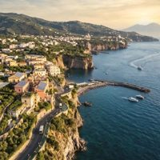
Best Wedding Venues in Sorrento, Italy: A Wedding Planner’s GuideAmalfi Coast10 November 2026 Caruso Belmond HotelAmalfi Coast17 November 2025
Caruso Belmond HotelAmalfi Coast17 November 2025 How to choose your Italian vendor team: a planner’s honest playbook10 October 2025
How to choose your Italian vendor team: a planner’s honest playbook10 October 2025 Mediterranean maximalism: from citrus hues to pattern-play tables10 October 2025
Mediterranean maximalism: from citrus hues to pattern-play tables10 October 2025 The Italian welcome party: turning arrival day into la dolce vita10 October 2025
The Italian welcome party: turning arrival day into la dolce vita10 October 2025 The Italian wedding feast: from aperitivo teatrale to late-night street food10 October 2025
The Italian wedding feast: from aperitivo teatrale to late-night street food10 October 2025 Amalfi Coast vs. Cinque Terre: two coastlines walk into your moodboardAmalfi Coast10 October 2025
Amalfi Coast vs. Cinque Terre: two coastlines walk into your moodboardAmalfi Coast10 October 2025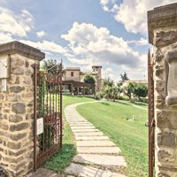
Abbazia di San FaustinoUmbria10 October 2025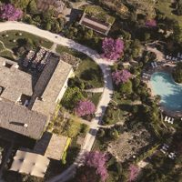
Castello di PetrataUmbria10 October 2025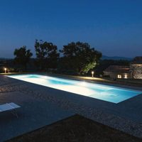
Rara Factory Design HouseUmbria10 October 2025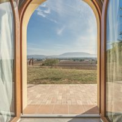
Ziarelli Country LoftUmbria10 October 2025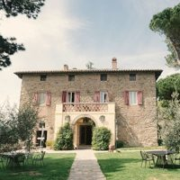
Tenuta di Casa BruciataUmbria10 October 2025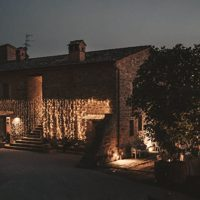
Nikis ResortUmbria10 October 2025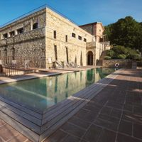
Antico Monastero di San BiagioUmbria10 October 2025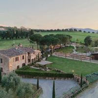
Borgo SilianoUmbria8 October 2025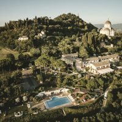
Monastero Santa MargheritaUmbria8 October 2025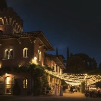
Villa Le FontanelleTuscany8 October 2025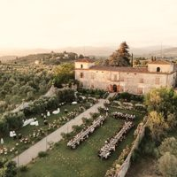
Villa Medicea di LillianoTuscany8 October 2025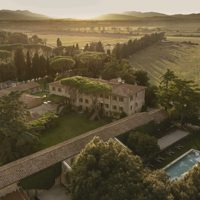
La Pescaia ResortTuscany8 October 2025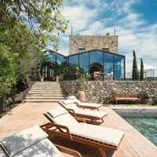
Castello di VicarelloTuscany8 October 2025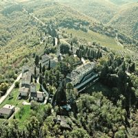
Borgo PietrafittaTuscany8 October 2025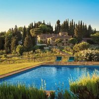
Le Filigare | Winery & AccommodationTuscany8 October 2025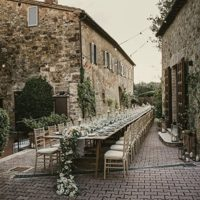
Borgo ArgianoTuscany8 October 2025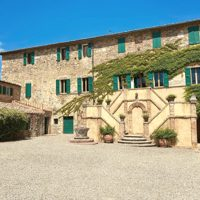
Borgo di RecenzaTuscany8 October 2025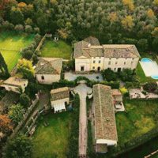
Villa MichaelaTuscany8 October 2025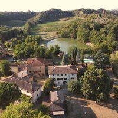
Antico Borgo La TorreTuscany8 October 2025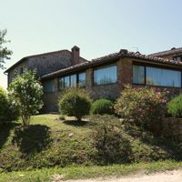
Villa Il NocetoTuscany8 October 2025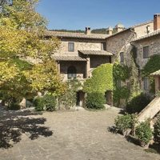
ChiarentenaTuscany8 October 2025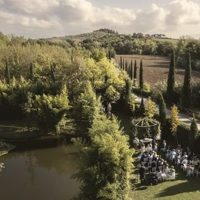
Tenuta i MassimiTuscany8 October 2025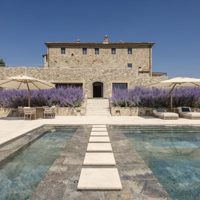
Podere TesoroTuscany8 October 2025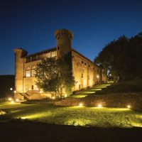
Castello di GalbinoTuscany8 October 2025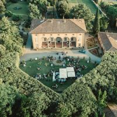
Villa OlivaTuscany8 October 2025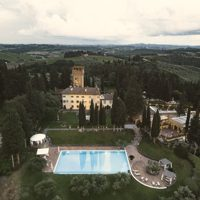
Antica Fattoria PaternòTuscany7 October 2025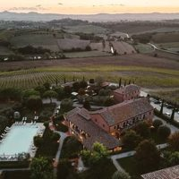
Borgo Tre RoseTuscany7 October 2025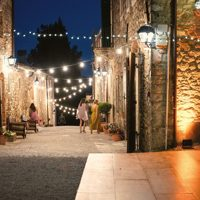
Borgo LaticastelliTuscany7 October 2025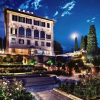
Il SalviatinoTuscany7 October 2025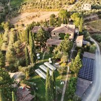
Borgo Casa al VentoTuscany7 October 2025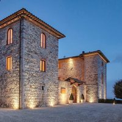
Castello La LecciaTuscany7 October 2025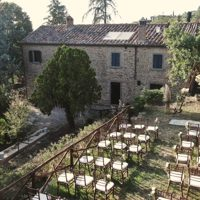
Casa2ElisabetteTuscany7 October 2025- Borgo SilianoTuscany7 October 2025
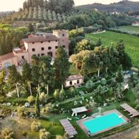
Villa Il PozzoTuscany7 October 2025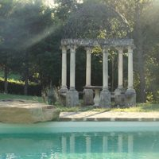
Villa La CollinaTuscany7 October 2025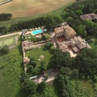
Wedding in Tuscany at San Lorenzo a Linari | Historic Monastery near SienaTuscany7 October 2025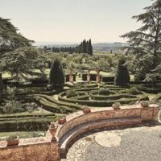
Villa CatignanoTuscany7 October 2025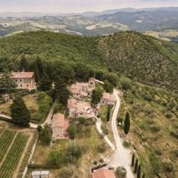
Querceto di CastellinaTuscany7 October 2025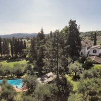
Villa Merlo NeroTuscany7 October 2025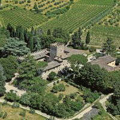
Castello Il PalagioTuscany7 October 2025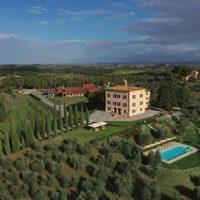
Tenute del CerroTuscany7 October 2025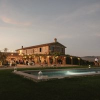
La Locanda in TuscanyTuscany7 October 2025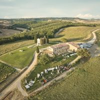
VitaletaTuscany7 October 2025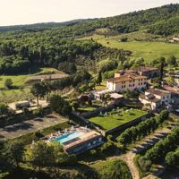
Albergo Villa CasafrassiTuscany7 October 2025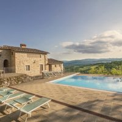
La Conca FarmhouseTuscany7 October 2025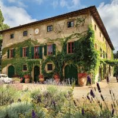
Villa PozzoloTuscany7 October 2025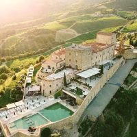
Castello di VelonaTuscany7 October 2025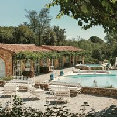
Valle di BadiaTuscany7 October 2025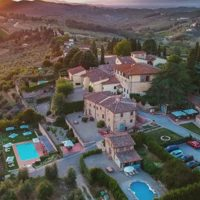
Relais Villa OlmoTuscany7 October 2025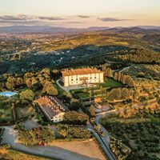
Tenuta di ArtiminoTuscany7 October 2025- L’Arancera di Villa GrabauTuscany7 October 2025
- Castello di Castagneto CarducciTuscany7 October 2025
- Relais Castel BigozziTuscany7 October 2025
- Villa Daniela GrossiTuscany7 October 2025
- Tenuta LupinariTuscany7 October 2025
- Tenuta di PapenaTuscany7 October 2025
- Conti di San BonifacioTuscany7 October 2025
- Borgo VaggiTuscany7 October 2025
- Podere MontaleTuscany7 October 2025
- Cappuccina Country ResortTuscany7 October 2025
- PancolinaTuscany7 October 2025
- Relais La Corte Dei PapiTuscany6 October 2025
- Terre di NanoTuscany6 October 2025
- Casa CornacchiTuscany6 October 2025
- Antico Convento I CappucciniTuscany6 October 2025
- Tenuta CorbinaiaTuscany6 October 2025
- Relais La CostaTuscany6 October 2025
- Tenuta TegolatoTuscany6 October 2025
- Villa NemoraTuscany6 October 2025
- La Torre sulla via FrancigenaTuscany6 October 2025
- Villa ParisiTuscany6 October 2025
- Castello di Palazzo al PianoTuscany6 October 2025
- Villa CollaltoTuscany6 October 2025
- Castello di SegalariTuscany6 October 2025
- Villa di UlignanoTuscany6 October 2025
- Castello di VicarelloTuscany6 October 2025
- Discover Italy’s Regional Dishes and Wines: A Culinary Journey Across Italy6 December 2024
- Unique and Unforgettable Tourist Experiences in Italy: Nature, Culture, and Culinary AdventuresTuscany6 December 2024
- The Wedding Industry: Key Players and Their Essential Roles in Crafting a Dream Wedding6 December 2024
- The Future of Weddings: Must-Know Trends for 20256 December 2024
- Villa SigurtàVenice and Veneto2 December 2024
- La Canzone del MareAmalfi Coast2 December 2024
- Punta TragaraAmalfi Coast2 December 2024
- Villa AstorAmalfi Coast2 December 2024
- Villa BalbianoThe lakes2 December 2024
- Exclusive Weddings on the Amalfi CoastAmalfi Coast2 December 2024
- Destination Weddings at Hotel Bellevue SyreneAmalfi Coast2 December 2024
- Villa ElianaAmalfi Coast2 December 2024
- Capri Palace JumeirahAmalfi Coast2 December 2024
- Grand Hotel Excelsior VittoriaAmalfi Coast2 December 2024
- I Giardini del FuentiAmalfi Coast2 December 2024
- Villa OlivieroAmalfi Coast2 December 2024
- Borgo Bastia CretiUmbria2 December 2024
- Castello di MontignanoUmbria2 December 2024
- Petra Segreta Resort & SpaSardinia2 December 2024
- Hotel Cala di VolpeSardinia2 December 2024
- Forte Village ResortSardinia2 December 2024
- Verdura ResortSicily2 December 2024
- Castello BrownLiguria2 December 2024
- Hotel SplendidoLiguria2 December 2024
- Le SirenuseAmalfi Coast2 December 2024
- Masseria Torre MaizzaPuglia2 December 2024
- Masseria San DomenicoPuglia2 December 2024
- Masseria Torre CoccaroPuglia2 December 2024
- Castello di MeletoTuscany2 December 2024
- La Posta VecchiaRome2 December 2024
- Relais Borgo San FeliceTuscany2 December 2024
- Il BorroTuscany2 December 2024
- Villa D’EsteThe lakes2 December 2024
- Villa CimbroneAmalfi Coast2 December 2024
- Borgo EgnaziaPuglia2 December 2024
- Palazzo NaiadiRome2 December 2024
- Castello di BanfiTuscany2 December 2024
- Villa ErbaThe lakes2 December 2024
- Villa del BalbianelloThe lakes2 December 2024
- Destination Wedding in Lazio: The Eternal City as Your Wedding BackdropRome2 December 2024
- Destination Wedding in Liguria: A Wedding by the Sea in Cinque TerreLiguria2 December 2024
- Destination Wedding in Emilia-Romagna: A Wedding Where Tradition Meets InnovationEmilia-Romagna2 December 2024
- Destination Wedding in Veneto: Romance in the Heart of VeniceVenice and Veneto2 December 2024
- Destination Wedding in Puglia: Say “I Do” in the Land of TrulliPuglia2 December 2024
- Destination Wedding in Lombardy: Sophistication Meets NatureThe lakes2 December 2024
- Destination Wedding in the Amalfi Coast: An Iconic Wedding by the SeaAmalfi Coast2 December 2024
- Destination Wedding in Sicily: A Dream Wedding on the Island of the GodsSicily2 December 2024
- Destination Wedding in Tuscany: Romance in the Heart of ItalyTuscany2 December 2024
- Destination Wedding Planners in ItalyTuscany25 December 2018
- Civil weddings in TuscanyTuscany10 May 2017
- “Trash the dress” at Elba Island, TuscanyTuscany7 April 2017
- Why saying I DO! In TuscanyTuscany27 March 2017
- Make Chianti Region your Wedding Destination!Tuscany4 March 2017
- A gorgeous wedding in Tuscany published by 5starweddingdirectory!Tuscany24 February 2017
- Tuscany as Top Wedding DestinationTuscany20 February 2017
- Just Married!Tuscany7 February 2017
- The Lebanese wedding dress code or... how to get dressed to a Lebanese wedding28 November 2016
- Catholic ceremony on Lake Como? Yes, you can!The lakes24 November 2016
- Want to get married in Italy? You may want to read this…10 November 2016
- Drone camera in wedding photography20 February 2015
- No limits, no hesitation: Antonino Cannavacciuolo!The lakes17 May 2013
- 10 best beaches in italy!Sardinia14 May 2013
- raoul & swing orchestra14 May 2013
- italian wedding photographer19 April 2013
- highlighting the elegance of a moment!17 April 2013
- in the heart of the boot: umbria regionUmbria15 April 2013
- sweetheart wedding table - yes, I do!10 April 2013
- historical reenactment that features colorful 16th-century boats.Tuscany10 April 2013
- emerald stone - colour of the year 20139 April 2013
- mamma mia...recipes and flavors Italiani!!!Amalfi Coast8 April 2013
- wedding entertainment ideas8 April 2013
- girl power, your wedding memories!8 April 2013
- wedding design 2013 new trends: colors, décor, theme5 April 2013
- Venice in loveVenice and Veneto5 April 2013
- italian style wedding favors!5 April 2013
- Sicily to be discovered!Sicily5 April 2013
- your first wedding night lingerie...4 April 2013
- wine tour in Italy2 April 2013
- hair and make-up inspiration from the spring 2013 bridal collections2 April 2013
- want to know more about Rehearsal Dinner29 March 2013
- Let's talk about ... Farewell Party!28 March 2013
- your special wedding soundtrack!27 March 2013
- the hottest wedding gown trends for spring/summer 201326 March 2013
- A wonderful Italian Experience: Discover the beauty of Florence, Tuscany, Cinque Terre & RomeTuscany4 March 2013